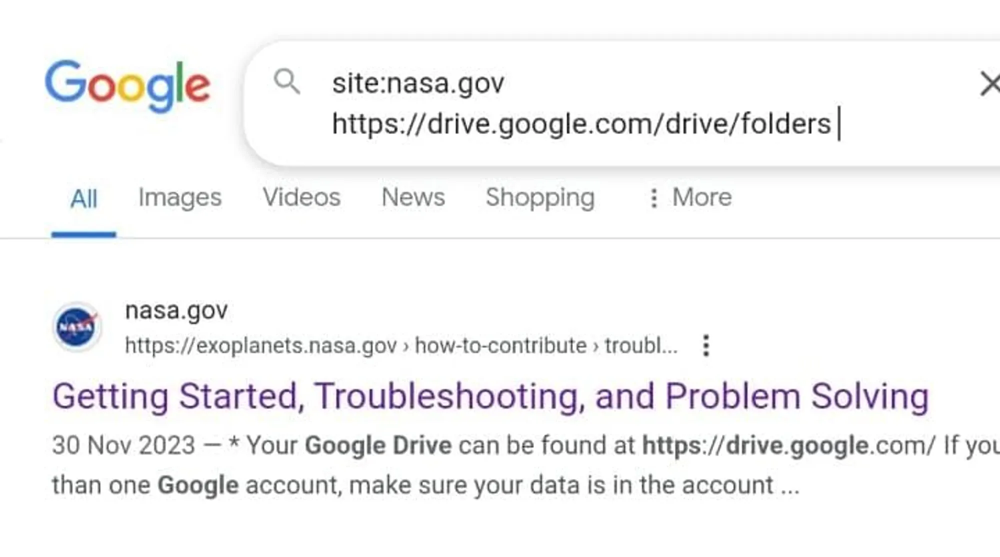
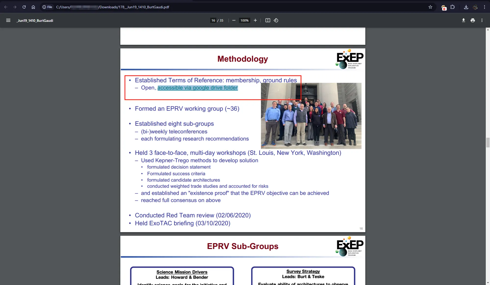
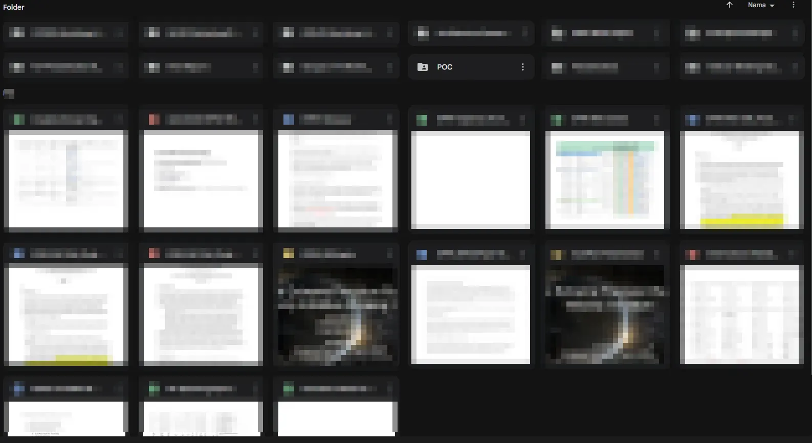
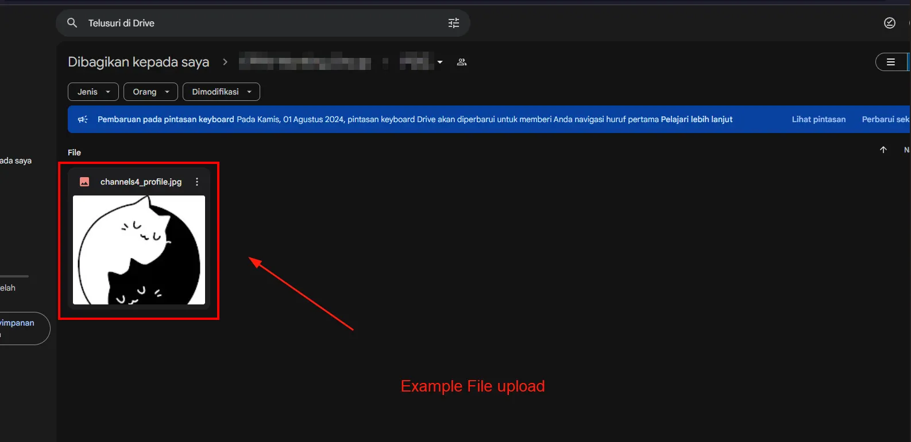
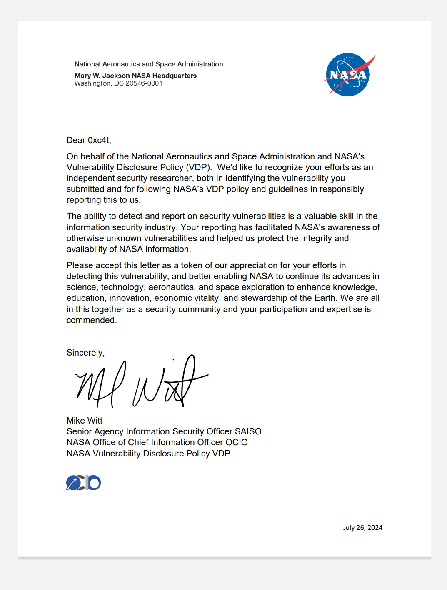

How I Can Get P1 Nasa easily — Dorking
Well according to the title here I will share about how I got P1 at nasa? only using the dorking technique I got P1, here’s the story, when I wanted to sleep suddenly my friend called and told me he got P1 in the nasa VDP program using only simple dorking, immediately I opened my eyes, “really bro?”, and he replied “really cuk”, I used this dorking
site:NASA.gov "https://drive.google.com/file/d/"
What is Publicly Accessible Google Drive?
A vulnerability has been identified where a Google Drive link has been publicly shared, allowing unrestricted access to anyone with the link. This issue grants all users the ability to view, edit, delete, and upload files within the Drive. Such unrestricted permissions can lead to severe security and privacy risks for the owner of the Drive and any sensitive data stored within it.
Proof of concept
- Using the dorking provided by my friend Dhafy (Bug Hunter), I tried dorking to get the Publicly Accessible Google Drive vulnerability, and more or less like this, simple but dangerous

-
I try to check several web pages that display links to the internal google drive, I try to access one by one to see if there is a drive that gives high access to users who access the google drive link.
-
Here I get a pdf that displays a google drive link that gives me access to read, delete, upload files, and other access, I try to create a folder and upload a photo as a poc following the photo



Timeline
- Jun 21, 2024 02:15:01 UTC — Report
- Jul 04, 2024 10:26:22 UTC — Triaged findings
- Jul 26, Jul 2024 19:46:02 UTC — Get letter of Nasa
Latter of Nasa

Thanks to my friend Dhafy don’t forget to follow / send connections to his Linkedin :)
Refrence
- https://owasp.org/www-project-top-ten/2017/A3_2017-Sensitive_Data_Exposure